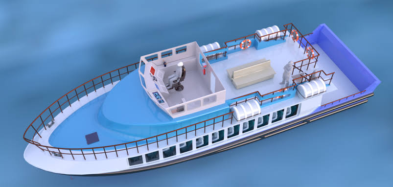
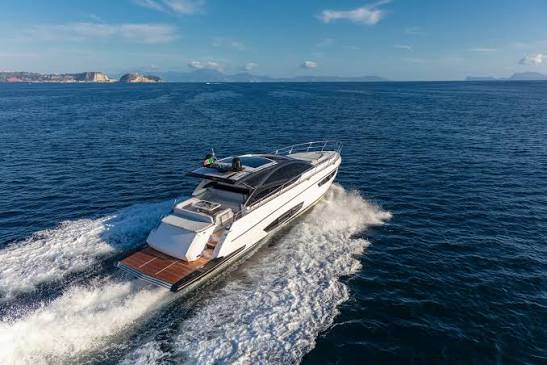
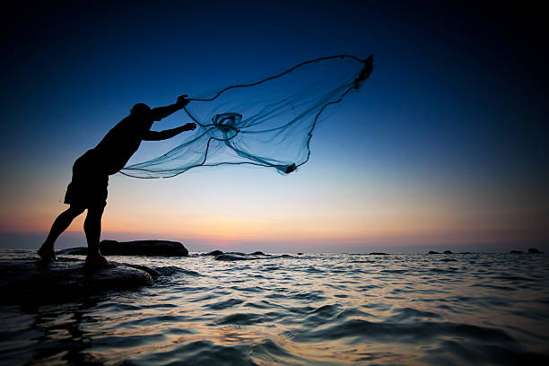

KENYA MARINE SUPPLIES LTD
History of Kenyan Marine Supplies
Marine supplies in Kenya developed through the growth of maritime trade along the Indian Ocean coast. Mombasa became a major trading port, creating demand for ship equipment, spare parts, fuel, fishing gear, and safety materials. After independence in 1963, the expansion of the Port of Mombasa increased the need for marine supply businesses.

About us
Kenya Marine Supplies Ltd is a company based in Mombasa that provides boat equipment, fishing gear and safety items to customers along the Kenyan coast.

Our Products and Services
Boats
We sell fishing boats, passenger boats and speedboats. Our boats are strong and safe for use in the ocean and lakes.

Marine Equipment
We sell life jackets, anchors, fishing nets, navigation equipment and boat engines.
